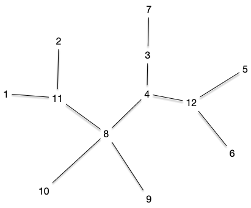
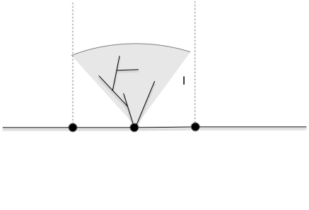

Tracés d'arbre
Il existe de nombreux tracés d'arbre possible. Nous allons en montrer deux, classiques et simple à mettre en œuvre.
TBD Arbre + longueur sur les arêtes. 1 si on sait rien.
TBD coder algo en python
Tracé radial
Le tracé radial fonctionne en suivant un ordre de DFS à partir d'un sommet nommé racine. L'idée est d'associer un angle à chaque sommet à partir des feuilles équi-réparties sur $[0, 2\cdot \pi]$ dans l'ordre d'examen du DFS, puis de propager un angle à son parent.
Ceci est possible car le DFS assure que les sous arbres sont des intervalles de l'ordre.
Fixons nous les idées en regardant ce qu'il se passe avec l'arbre suivant :

En partant du centre 8.
L'ordre DFS que l'on a choisi est celui de la figure : $[1, 2, 11, 7, 3, 4, 5, 6, 12, 9, 10, 8]$
Il y a 7 feuilles, leurs angles seront :
- 0 pour la feuille 1
- $(2\cdot\pi)/7$ pour la feuille 2
- $(2\cdot\pi)\cdot (2/7)$ pour la feuille 7
- $(2\cdot\pi)\cdot (3/7)$ pour la feuille 5
- $(2\cdot\pi)\cdot (4/7)$ pour la feuille 6
- $(2\cdot\pi)\cdot (5/7)$ pour la feuille 9
- $(2\cdot\pi)\cdot (6/7)$ pour la feuille 10
Ensuite, l'angle de chaque élément sera la moyenne de ses successeurs dans les sous-arbre :

Ce qui donne pour les autres sommets, en suivant l'ordre du DFS :
- angle de $(2\cdot\pi)/14$ pour le sommet 11
- angle de $(2\cdot\pi)\cdot (2/7)$ pour le sommet 3
- angle de $(2\cdot\pi)\cdot (2/7)$ pour le sommet 4
- angle de $pi$ pour le sommet 12
Pour trouver les coordonnées, il suffit de reprendre les sommets dans l'ordre inverse du DFS :

Au final, en prenant les mêmes longueurs pour chaque arêtes on a le tracé :

Si le nombre de feuilles est connu, ce calcul peut se faire en deux passages de DFS :
- le premier dans le sens croissant pour déterminer les angles à partir des feuilles
- le premier dans le sens inverse pour déterminer les positions à partir du centre qui est en $(0, 0)$
On en déduit :
Proposition
On peut trouver les coordonnées axiales d'un arbre en $\mathcal{O}(n)$ opérations.
Le centre peut a priori être tout sommet qui n'est pas une feuille, mais il pourra à être intéressant de prendre un sommet répartissant au mieux les sommets.
Montrer que pour tout arbre il existe soit :
- une arête unique qui découpe l'arbre en deux parties ayant exactement $n/2$ sommets
- un sommet unique qui découpe l'arbre en une forêt dont aucun arbre n'a plus que $n/2$ sommets
corrigé
corrigé
TBD on part d'un sommet et on compte
Montrer que l'on peut déterminer en temps linéaire cette arête ou sommet.
corrigé
corrigé
TBD avec un DFS on marque chaque sommet avec sa taille.
Tracé axial
TBD tracé autour d'un chemin le plus long.

On organise le tracé autour d'u axe formé d'un chemin le plus long. On alterne les sous-arbres en les traçant radialement :

Les barres verticales montent des voisins de la racine du sous-arbre sur le chemin et l'angle initial correspond à l'intersection des barres avec un cercle de rayon la plus longue distance du sous-arbre à représenter. Ceci doit permettre de le représenter radialement sans déborder.
Trouver le chemin le plus long sur un arbre peut se faire en $\mathcal{O}(n^2)$ mais Disjkstra donne un moyen en $\mathcal{O}(n)$ de le faire :
- chemin le plus long depuis x, disons que c'est xy
- chemin le plus long depuis y, disons que c'est yz
$yz$ est un chemin le plus long de l'arbre.
Prouvez que la procédure précédente fonctionne
corrigé
corrigé
TBD si c'était un uv le max on regarde l'arbre xyz et on cherche à y ajouter u et v. Aucun cas ne fonctionne.
Autre
TBD https://cs.brown.edu/people/rtamassi/gdhandbook/chapters/trees.pdf et https://www.csd.uoc.gr/~hy583/papers/ch8.pdf